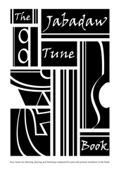
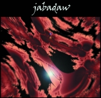

Jabadaw Shop
To buy any of these products by PayPal, please click the Buy Now button for that item.
Jabadaw Tunebook
The Jabadaw Tunebook is available now. It features around 90 new tunes written by past and present members of the band — mostly dance tunes, but with a few weird and wonderful concert pieces included also. It costs £11.00 including post and packaging.

The tunes are suitable for most chromatic melody instruments. Over half of them have
guitar chords and / or harmony parts, and two or three have full-blown arrangements
for melody instrument and piano. The book also includes a chord chart and background
notes on the tunes.
You can download a sample from the Jabadaw Tunebook here —
includes one chapter and the complete index of tune titles.
Jabadaw CD
The Jabadaw CD is available now. It features eleven tracks of original and traditional material. The total running time is 56:08. It costs £12.75 including post and packaging.
|  |
|
[Back to Home Page]